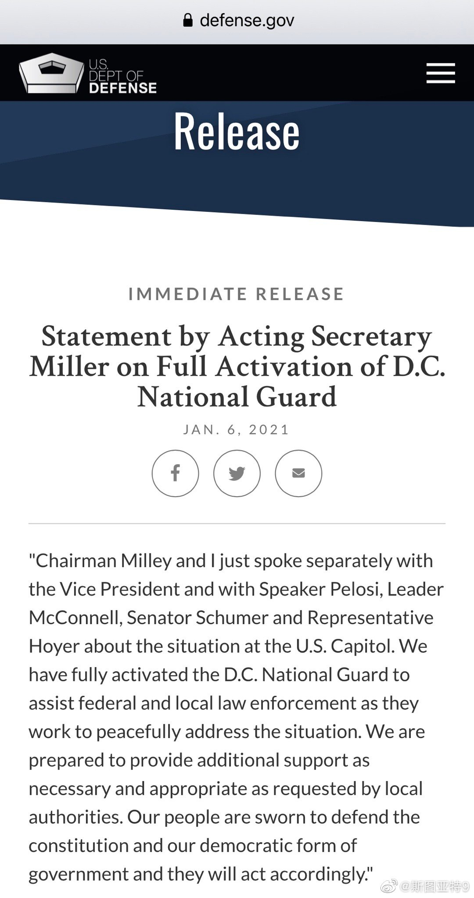
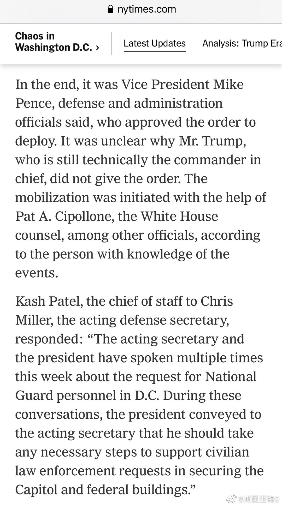

CNN爆料说在川粉攻占国会之后，尽管幕僚请求，川普不愿意出动国民警卫队增援，国防部找到的副总统彭斯做了决定。看国防部这个声明，确实没有提到川普。纽约时报引述代理国防部长的幕僚长说，代理部长本周和川普谈过好几次，川普把保护国会的职责传给了代理部长。这意思就是，虽然只有川普作为总司令有权力下令出兵，之前川普已经预授权了。确实是确证了今天川普没有授权。川普就在白宫看着电视里川粉攻占国会，不授权国民警卫队增援。
说真的，川粉们自己相信他们宣传对那些荒谬的话吗？闯入国会的不是川粉是antifa或者BLM？国会在里面认证拜登胜选川普滚蛋，Antifa和BLM为什么要冲进去打断？他们不应该在外面狂欢庆祝吗？川粉真的相信？